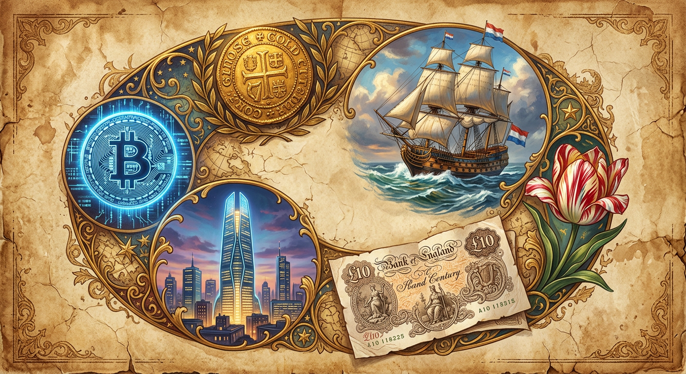
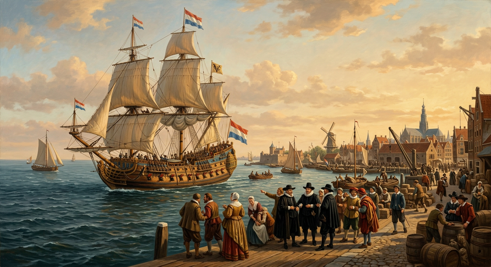
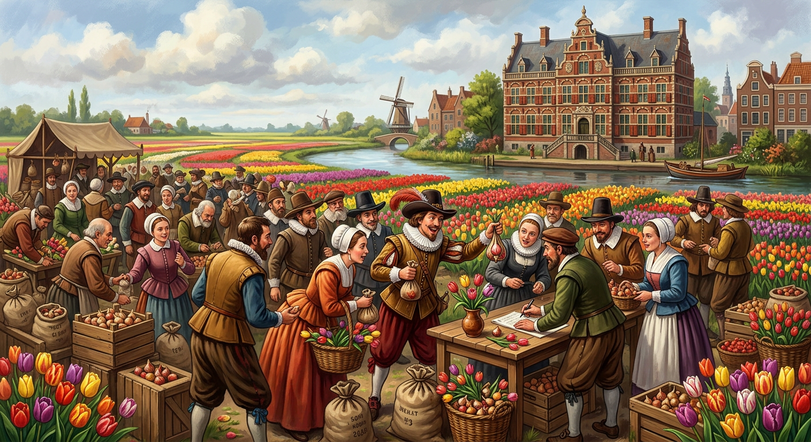
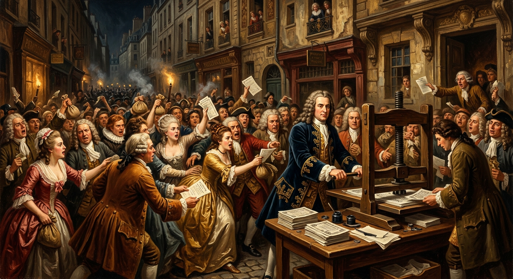
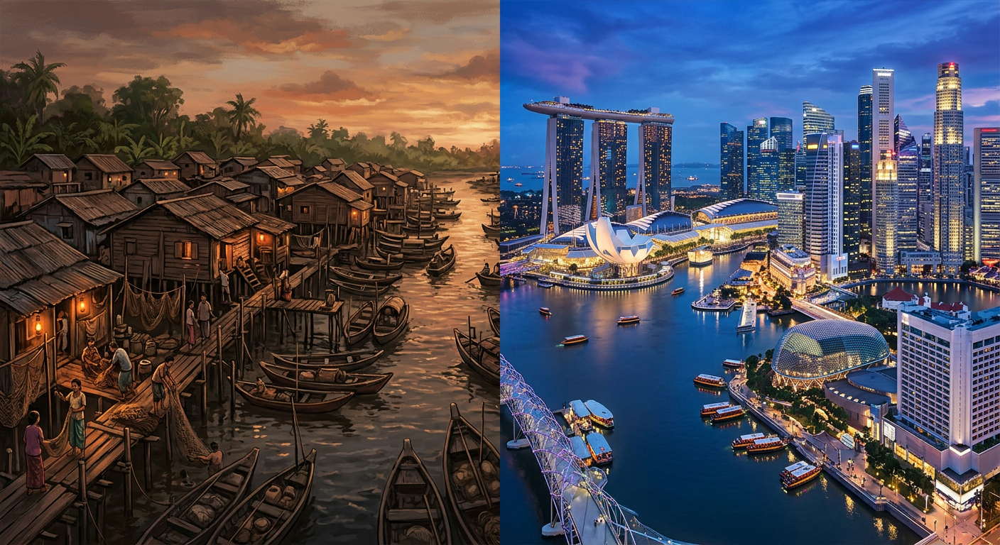
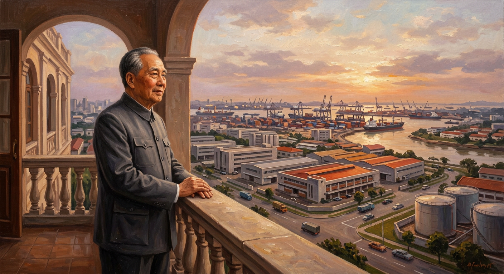
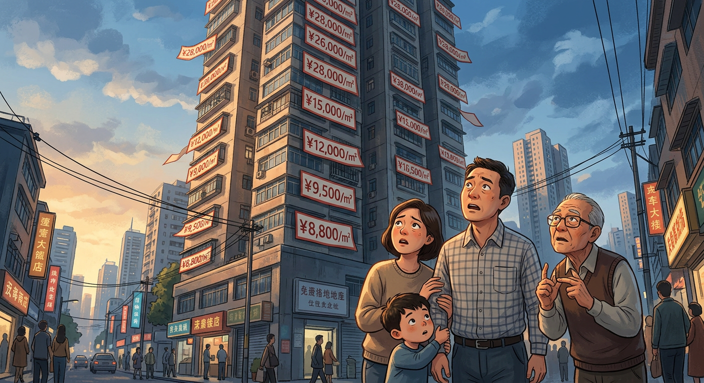
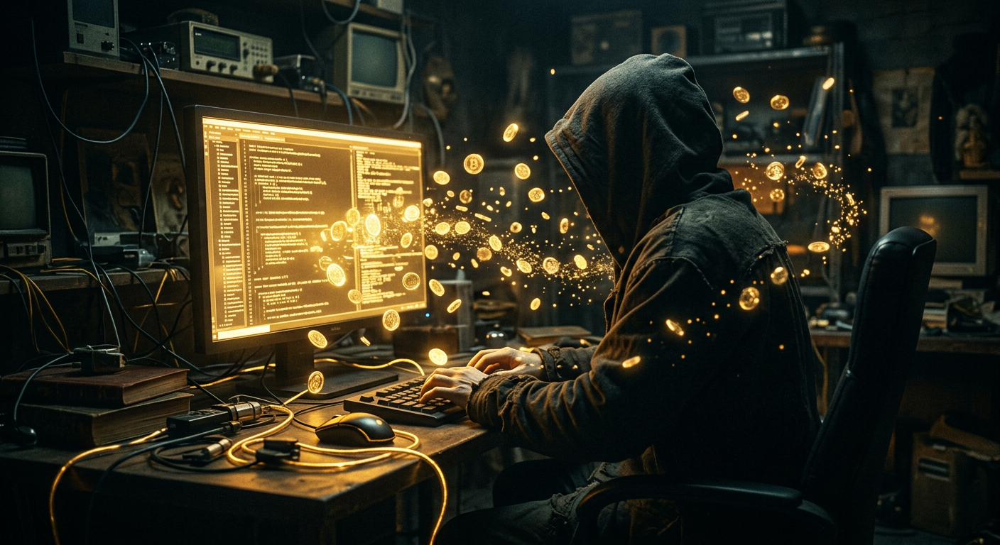
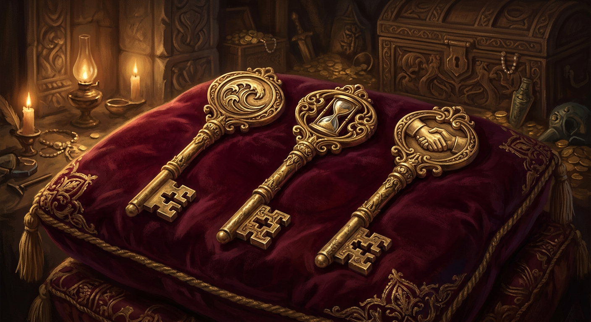

历史中那些财富趣事
从大航海到比特币 · 400年的财富密码

16世纪末，荷兰人开始远航亚洲走私香料。一趟远航的利润能高达400%，但成本也吓人——一艘船的造价相当于今天的几百万人民币，而且海上充满风险：风暴、海盗、葡萄牙海军。
沉了？全赔。被打劫？全赔。一个人根本扛不住。
1602年，有人出了个天才主意：把风险切碎。6个商会合并，向全荷兰人募集资金，每个人出一点钱，换一张纸（股票）。赚了按比例分，亏了最多亏投入的部分。
这一下募集了 650万 荷兰盾——相当于今天的几十亿。荷兰东印度公司（VOC）成了人类历史上第一家股份制公司。
更关键的创新来了：股票可以买卖。不想等了？把纸卖给想等的人。于是阿姆斯特丹出现了世界第一家股票交易所。
VOC存在了200年，每年平均回报 18%。

VOC的成功让荷兰人尝到了投资的甜头。很快，他们的目光转向了一种花——郁金香。
郁金香从土耳其引进，稀有品种是贵族的身份象征。更妙的是，一种病毒让花瓣出现了漂亮的条纹，感染的花更加稀有、更加漂亮。
价格开始疯涨：
· 一个稀有球茎 = 一栋阿姆斯特丹运河旁的大宅
· 普通品种也跟着涨，面包师、铁匠、农民都加入买卖
所有人都觉得"花会一直涨"。有人卖掉房子买花，有人用一年的收入买一个球茎。
1637年2月，在哈勒姆的一场拍卖会上，突然没有人愿意出价了。
恐慌蔓延。一周之内，价格暴跌 90%。很多花农和投机者一夜破产。

John Law 是个苏格兰人，赌徒出身，数学天才，曾在决斗中杀人坐过牢。逃到法国后，他向国王路易十四提出了一个大胆的想法：
"金属货币太笨重了。用纸币代替，国家经济就能飞起来。"
国王同意了。John Law 成立了皇家银行，开始发行纸币。同时他搞了一家"密西西比公司"，声称北美的路易斯安那遍地黄金。
公司股票从 150 里拉涨到 18,000 里拉——12倍。巴黎一条小街挤满了抢购股票的人，有人从马上挤下来摔死，有人雇人通宵排队。
但路易斯安那没有黄金，只有沼泽和鳄鱼。
1720年，泡沫破裂。法国经济崩溃，John Law 仓皇逃出国，死在威尼斯一间小旅馆里，口袋里只剩几个硬币。
但他发明的纸币，改变了整个世界。

1965年8月9日，新加坡被马来西亚联邦踢了出去。
李光耀在电视上宣布独立时，哭了。
这个岛国只有北京海淀区那么大，没有石油、没有矿产、没有农业，连喝的水都要从马来西亚买。周围还有印尼等大国虎视眈眈。
怎么活？
李光耀选择了资本主义：
· 招商引资：给跨国公司免税、建厂房
· 法治严明：贪污腐败直接坐牢，李光耀自己住公房
· 英语教育：让国民能跟全世界做生意
· 种族和谐：严管种族冲突，稳定压倒一切
跨国公司蜂拥而来——德州仪器、惠普、苹果……新加坡成了"亚洲工厂"。
20年，从第三世界到第一世界。人均GDP从 500美元 涨到 60,000美元——120倍。

1978年11月，74岁的邓小平访问新加坡。
他看到了什么？一群华人，在同样一个弹丸小岛上，用资本主义搞成了发达国家。工厂繁忙、港口繁荣、人民富足。
这对邓小平的冲击是巨大的——华人也能搞成这样。
回国后不久，改革开放启动。邓小平说了一句后来家喻户晓的话：
"不管黑猫白猫，抓到老鼠就是好猫。"
意思是：别管什么主义不主义，能让老百姓过上好日子的方法就是好方法。
但很多人没听懂这句话。
他们太执着于"社会主义"的概念，以为国家会永远包办一切——包括房子。房子是国家分的福利，怎么会涨价呢？
结果呢？下一个故事告诉你。

1998年，中国取消福利分房，住房正式商品化。房子变成了可以买卖的东西。
但很多人没转过弯来。他们觉得：房子就是住的，国家不会让房价涨的。
这是天大的误解。房子的本质是金融品，不是福利。
为什么？因为在信用货币时代，国家不断印钞票，钱越来越薄。2020年中国的M2（广义货币）是2000年的 15倍。钱多了，资产价格必然上涨——房子就是最大的资产之一。
看看北京房价：
· 2000年：约 2,000 元/㎡
· 2010年：约 20,000 元/㎡
· 2020年：约 60,000 元/㎡
20年涨了 30倍。不是房子变贵了，是钱变薄了。
那些早看懂的人，贷款买房，赚了几十倍。那些等着"国家分房"的人，永远等不到了。这就是"过度拟合社会主义"的代价。

2008年金融危机，全球信任崩塌。一个叫"中本聪"的神秘人物（没人知道他是谁）发布了一篇论文，提出一个疯狂的想法：
"能不能有一种钱，不需要银行，不需要国家，谁也印不了？"
2009年1月3日，他/她/它挖出了第一个区块——创世区块。比特币诞生了。
比特币的规则写死在代码里：总量 2100万 枚，永不增发。谁也不能多印。每10分钟产生一批，越来越难挖，2140年挖完。
最早比特币一文不值。2010年有人用 10,000 个比特币买了两个披萨——这是第一笔交易。
然后价格开始狂飙：
· 2013年：突破 1,000 美元
· 2017年：突破 20,000 美元
· 2021年：突破 60,000 美元
总市值最高超过 1万亿 美元。一段代码，值五千亿。
比特币是不是泡沫？也许。但它开创了一个新时代：财富不再只依赖国家和银行。

讲了这么多故事，让我们用数据来验证一下：
财富分布：全球最富 1% 的人，拥有全球 50% 的财富。最富 10% 的人拥有 85%。剩下90%的人分15%。
货币贬值：中国M2（广义货币）2000年约13万亿，2024年约300万亿——23倍。你的钱如果存在银行，购买力每年被通胀吃掉约 3-5%。
资产回报：沪深300指数过去20年年化约 8%。一线城市房产过去20年涨了 15-30倍。而银行存款利率现在不到 2%——跑不赢通胀。
贫富差距的根源：穷人只存钱（被通胀吃掉），富人买资产（享受增值）。差距年复一年拉大。
数据不会骗人：持有优质资产的人，永远比只存钱的人富得快。
回顾这9个故事，你会发现财富的底层逻辑其实很简单。三把钥匙：
① 理解风险
荷兰人把风险切碎，发明了股份制。郁金香和密西西比泡沫告诉你：没有风险的收益是幻觉。谁承诺你"稳赚不赔"，谁就是在骗你。风险不是用来回避的，是用来管理的。
② 理解时间
新加坡用20年从穷国变富国。北京房价用20年涨30倍。爱因斯坦说复利是"世界第八大奇迹"。时间是普通人最大的武器——但只有持有资产，时间才站在你这边。存钱的话，时间是你的敌人。
③ 理解信用
John Law 发明纸币，比特币挑战法币——本质上都是关于"信用"的故事。钱的本质不是金银，是信任。信任国家，钱就有价值；不信任，钱就是废纸。
400年前荷兰人用船冒险，今天你用认知冒险。工具变了，逻辑没变。
认知决定财富。
你看到的世界，和别人不一样，你的财富就不一样。
